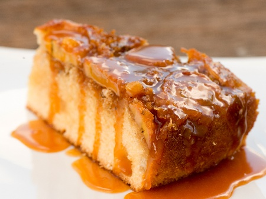

Юпитериански слоест десерт с банан и карамел

Начин на проготвяне
- В тавичка се изсипва 200 гр. захар и маслото, слага се на котлона и се карамелизира до розово.
- Сваля се от котлона и отгоре се слагат нарязаните на колелца банани.
- Отделно се разбиват яйцата с останалата захар и се прибавя брашното, разбъркано с бакпулвера.
- Сместа за банановия сладкиш се изсипва върху бананите и се пече до зачервяване в умерена фурна.Докато е топъл сладкиш, се обръща.
- В тавата с останалия карамел на дъното се изсипва една чаена чаша вода и се слага на котлона да кипне.
- С получения сироп се залива сладкишът.
Слоест десерт с банани, бисквити и карамелен сос, който символизира многослойните облаци на Юпитер.
Юпитер

Факти
- Юпитер е най-голямата планета в нашата слънчева система с диаметър 142 984 км.
- От Земята Юпитер е третият най-ярък обект в нощното небе след Луната и Венера.
- Юпитер се състои главно от водород и хелий. Освен това има скалисто ядро от по-тежки елементи.
- Зашеметяващите 64 луни обикалят около Юпитер!
- Четирите най-големи луни се наричат Галилееви луни, тъй като са открити от Галилео Галилей през 1610 г.
- Най-голямата луна на Юпитер се нарича Ганимед и има по-голям диаметър от планетата Меркурий.
- Гигантското червено петно на Юпитер е постоянна буря, която е по-голяма от Земята! Известно е, че това съществува от 1655 г. Сега това е дълга буря…
- Магнитното поле на Юпитер е около четиринадесет пъти по-силно от това на Земята, което го прави най-силното в Слънчевата система.
- Средното разстояние от Юпитер до Слънцето е около 778 милиона километра, което е близо 5,2 пъти разстоянието от Земята до Слънцето.
- Въртенето на Юпитер е най-бързото от всички планети в Слънчевата система.
- Юпитер извършва пълно завъртане за по-малко от 10 часа. Юпитер извършва завъртане на Слънцето на всеки 11,86 години.